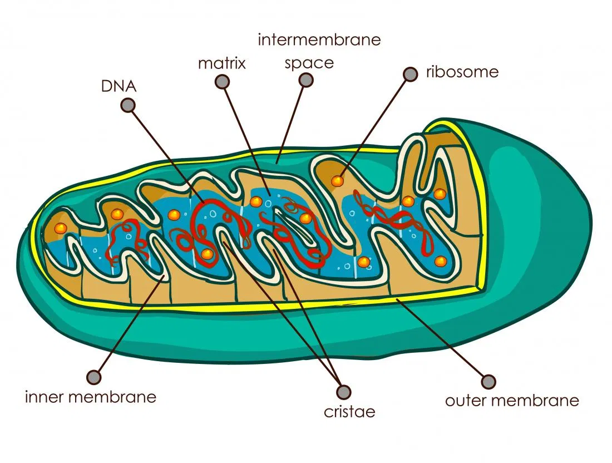

Animal Metabolism
Cellular Respiration
Most animals are Heterotrophic organisms, who have to get energy from eating other plants or animals. It takes place at mitochondria.
Undergoes Glycolysis, Pyruvate Oxidation, Kreb's Cycle and ElectronTransportChain
Glycolysis
Splits a 6-carbon sugar into 2* 3-carbon pyruvate
Pyruvate Oxidation
Pyruvate leaves Cytoplasm and moves into Mitochondria Matrix by Active Transport
Kreb's Cycle
Generates NADH and FADH that's used in Electon Transport Chain to produce more Energy (ATPs)
Electron Transport Chain (ETC)
The NADH and FADH generated during the Krebs cycle fuels the electron transport chain
Structure of Mitochondria
Double Membrane
Smooth Outer Membrane and Folded Inner Membrane(Cristae)
Liquid filled intermembrane space
Fluid filled Matrix space
Has it's own DNA and Ribosomes

Back